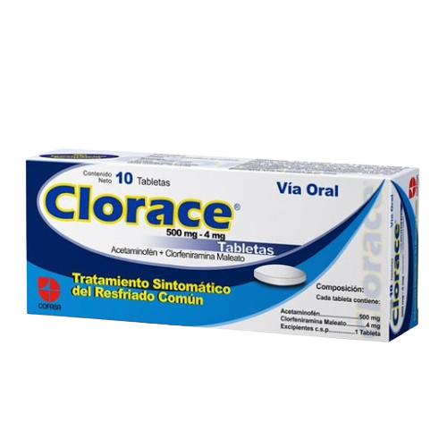
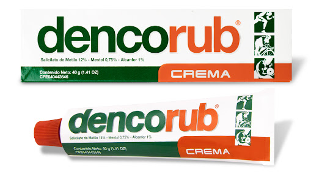
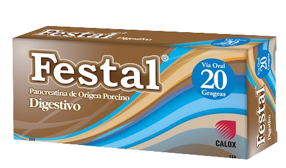
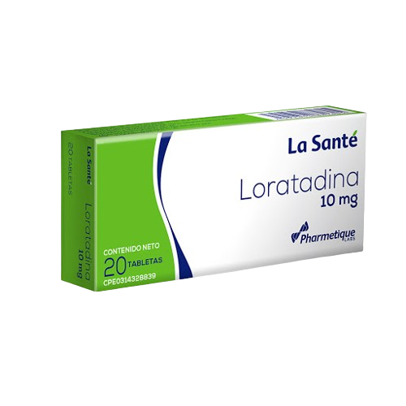
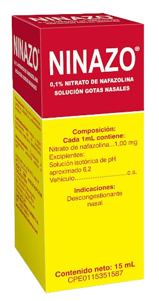
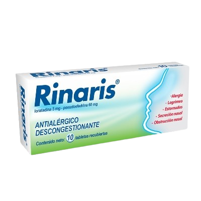

El Clorace bloquea la síntesis de las prostaglandinas, que son las encargadas de la creación de
respuestas inflamatorias, fiebre y producción del dolor. En combinación con inhibición de respuestas
alérgicas, como respuesta al bloqueo sobre los receptores de histamina.
Bs.59.69

Analgésico tópico de rápida acción que actúa contra los dolores musculares, artríticos y reumáticos
Bs.108.70

Alivio sintomático de alteraciones digestivas por deficiencia o desequilibrio de enzimas (pesadez de
estómago tras comidas, digestiones lentas).
Bs.234.07

Este medicamento se usa para tratar síntomas como estornudos, moqueo, ojos llorosos, picazón en la
garganta y sarpullido con erupción o urticaria.
Bs.87.05

Actúa como descongestionaste nasal, es decir reduce la obstrucción nasal, permitiendo una mejor
respiración por parte del paciente.
Bs.81.02

Elimina los síntomas de la rinitis alérgica y la. congestión nasal sin producir sueño, permitiendo.
respirar libremente y mejorando la calidad de vida.
Bs.162.03